import warnings; warnings.simplefilter("ignore")
import logging, sunpy; logging.getLogger('sunpy').setLevel(logging.ERROR)The SunPy (The SunPy Community et al. 2020) is a community-developed, free, and open source Python package for solar data analysis (Barnes et al. 2023; Mumford et al. 2020; The SunPy Community et al. 2015).
In this post, I will reproduce Figure 1 (see below) of the 2023 SunPy paper (Barnes et al. 2023) using the SunPy ecosystem. This is because one of the most important affiliated packages, pfsspy (Stansby et al. 2020), has been no longer developed since August 2023. The pfsspy package has been forked to sunkit-magex. Also, there are subtle differences in the aiapy package between 2023 and 2025. Therefore, I will basically follow the steps in this code provided by the authors of the 2023 SunPy paper, except that I will use the sunkit-magex package instead of the pfsspy package.
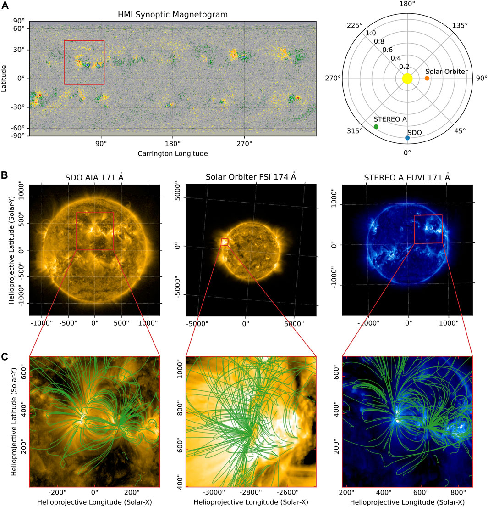
{kind=link}
Version Information
import sys
print("Python version:", sys.version)
import numpy as np
print("NumPy version:", np.__version__)
import matplotlib
print("Matplotlib version:", matplotlib.__version__)
import astropy
print("Astropy version:", astropy.__version__)
import sunpy
print("SunPy version:", sunpy.__version__)
import aiapy
print("aiapy version:", aiapy.__version__)
import sunpy_soar
print("sunpy-soar version:", sunpy_soar.__version__)
import sunkit_magex
print("sunkit-magex version:", sunkit_magex.__version__)Python version: 3.12.11 | packaged by conda-forge | (main, Jun 4 2025, 14:29:09) [MSC v.1943 64 bit (AMD64)]
NumPy version: 2.2.6
Matplotlib version: 3.10.5
Astropy version: 7.1.0
SunPy version: 7.0.1
aiapy version: 0.10.1
sunpy-soar version: 1.11.1
sunkit-magex version: 1.1.0Download HMI Synoptic Magnetogram for CR 2255
The SunPy paper (2023) said that the left panel of Figure1A shows the SDO/HMI synoptic magnetogram for Carrington rotation (CR) 2255 which began on 2022-03-08.
Let’s start by checking that CR 2255 actually began on 2022-03-08.
from sunpy.coordinates.sun import carrington_rotation_timecarrington_rotation_time(2255)<Time object: scale='utc' format='iso' value=2022-03-07 11:59:56.657>CR 2255 actually began on 2022-03-07 12:00 UTC, which also can be found in this page.
We can download the HMI polar-filled full-CR synoptic magnetogram hmi.synoptic_mr_polfil_720s (Sun 2018) for CR 2255 from JSOC using sunpy.net.Fido.
from sunpy.net import Fido, attrs as a# Please replace the following email with your own email address registered with the JSOC.
jsoc_email = 'mgjeon@khu.ac.kr'q = Fido.search(
a.Time('2022-03-07T12:00', '2022-03-07T12:00'),
a.jsoc.Series('hmi.synoptic_mr_polfil_720s'),
a.jsoc.PrimeKey('CAR_ROT', 2255),
a.jsoc.Notify(jsoc_email)
)q
Results from 1 Provider:
1 Results from the JSOCClient:
1 Results from the JSOCClient:
JSOCResponse length=1
| TELESCOP | INSTRUME | WAVELNTH | CAR_ROT |
|---|---|---|---|
| str7 | str9 | float64 | int64 |
| SDO/HMI | HMI_SIDE1 | 6173.0 | 2255 |
f = Fido.fetch(q, path='./data', overwrite=True)print(f)['data\\hmi.synoptic_mr_polfil_720s.2255.Mr_polfil.fits']We can load the fits file using sunpy.map.Map.
from sunpy.map import Mapm_hmi = Map(f)m_hmi.peek()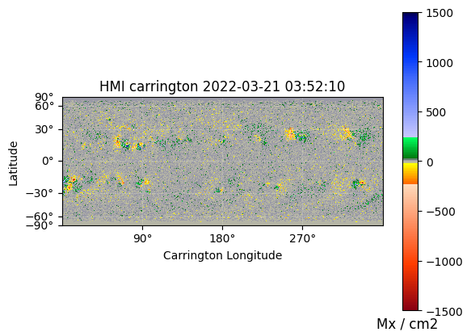
This is the same HMI synoptic magnetogram as shown in the left panel of Figure 1A in the SunPy paper (2023).
Select Location of AR
We identify the center of the active region (AR) of interest visually from the HMI synoptic magnetogram.
import astropy.units as u
from astropy.coordinates import SkyCoordm_hmi.coordinate_frame<HeliographicCarrington Frame (obstime=2022-03-21T03:51:33.000, rsun=695700.0 km, observer=<HeliographicStonyhurst Coordinate (obstime=2022-03-21T03:51:33.000, rsun=695700.0 km): (lon, lat, radius) in (deg, deg, m)
(0., -7.02110576, 1.48994814e+11)>)>ar_center = SkyCoord(lon=65*u.deg, lat=15*u.deg, frame=m_hmi.coordinate_frame)We can plot this coordinate on the HMI map.
import matplotlib.pyplot as pltfig = plt.figure(figsize=(15, 5))
ax = fig.add_subplot(111, projection=m_hmi)
m_hmi.plot(axes=ax)
ax.plot_coord(ar_center, marker='X', color='k', markersize=10);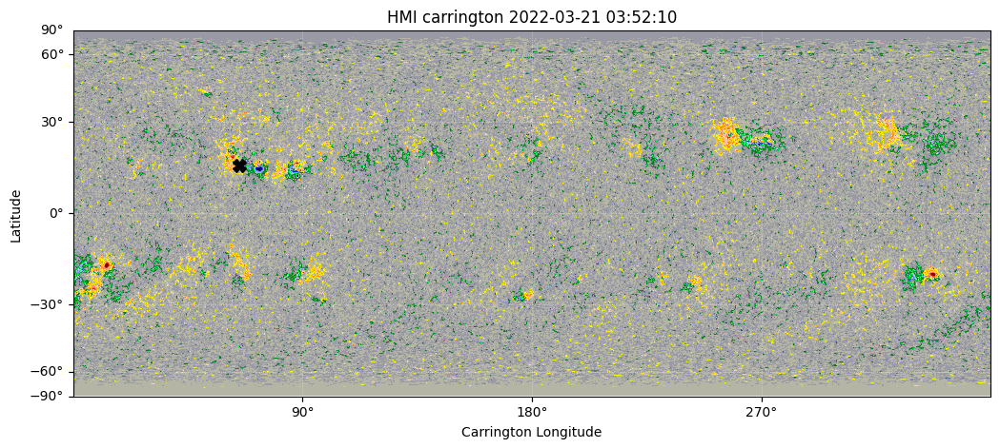
The default obstime of the carrington map is halfway through the carrington rotation.
m_hmi.coordinate_frame.obstime<Time object: scale='utc' format='isot' value=2022-03-21T03:51:33.000>car_start = carrington_rotation_time(2255)
car_end = carrington_rotation_time(2256)
print('CR 2255 start ', car_start)
print('CR 2255 end ', car_end)
car_halfway = car_start + (car_end - car_start) / 2
print('CR 2255 halfway ', car_halfway)CR 2255 start 2022-03-07 11:59:56.657
CR 2255 end 2022-04-03 19:19:29.900
CR 2255 halfway 2022-03-21 03:39:43.279Since a synoptic map is comprised of observations from many different times, we look up the obstime associated with our selected longitude and use this to correct our original AR coordinate
ar_date = carrington_rotation_time(2255, ar_center.lon)
ar_date<Time object: scale='utc' format='iso' value=2022-03-29 21:04:15.174>change_obstime = lambda x,y: SkyCoord(x.replicate(observer=x.observer.replicate(obstime=y), obstime=y))ar_center_corrected = change_obstime(ar_center, ar_date)
ar_center_corrected<SkyCoord (HeliographicCarrington: obstime=2022-03-29 21:04:15.174, rsun=695700.0 km, observer=<HeliographicStonyhurst Coordinate (obstime=2022-03-29 21:04:15.174, rsun=695700.0 km): (lon, lat, radius) in (deg, deg, m)
(0., -7.02110576, 1.48994814e+11)>): (lon, lat) in deg
(65., 15.)>Download EUV data for AR
We will download the EUV data from SDO/AIA, STEREO-A/SECCHI/EUVI, and Solar Orbiter/EUI/FSI.
First, we define the time range of interest.
tr = a.Time(ar_date-2*u.min, ar_date+2*u.min)
tr<sunpy.net.attrs.Time(2022-03-29 21:02:15.174, 2022-03-29 21:06:15.174)>We construct a search query for 171 Å EUV data from SDO/AIA and STEREO-A/SECCHI/EUVI. This will search the Virtual Solar Observatory (VSO).
aia_or_euvi = ((a.Instrument('AIA') | a.Instrument('EUVI'))
& a.Wavelength(171*u.angstrom)
& a.Sample(5*u.min))We construct a search query for 174 Å EUV data from Solar Orbiter/EUI/FSI. This will search the Solar Oriter Archive (SOAR) using the sunpy-soar package.
eui = a.Level(2) & a.soar.Product('EUI-FSI174-IMAGE')q = Fido.search(tr, aia_or_euvi | eui)q
Results from 3 Providers:
1 Results from the VSOClient:
1 Results from the VSOClient:
1 Results from the SOARClient:
1 Results from the VSOClient:
VSOQueryResponseTable length=1
| Start Time | End Time | Source | Instrument | Wavelength | Provider | Physobs | Wavetype | Extent Width | Extent Length | Extent Type | Size |
|---|---|---|---|---|---|---|---|---|---|---|---|
| Angstrom | Mibyte | ||||||||||
| Time | Time | str3 | str3 | float64[2] | str4 | str9 | str6 | str4 | str4 | str8 | float64 |
| 2022-03-29 21:02:21.000 | 2022-03-29 21:02:22.000 | SDO | AIA | 171.0 .. 171.0 | JSOC | intensity | NARROW | 4096 | 4096 | FULLDISK | 64.64844 |
1 Results from the VSOClient:
VSOQueryResponseTable length=1
| Start Time | End Time | Source | Instrument | Wavelength | Provider | Physobs | Wavetype | Extent Type | Size |
|---|---|---|---|---|---|---|---|---|---|
| Angstrom | Mibyte | ||||||||
| Time | Time | str8 | str6 | float64[2] | str3 | str9 | str6 | str8 | float64 |
| 2022-03-29 21:03:00.000 | 2022-03-29 21:03:02.000 | STEREO_A | SECCHI | 171.0 .. 175.0 | SSC | intensity | NARROW | FULLDISK | -0.00098 |
1 Results from the SOARClient:
QueryResponseTable length=1
| Instrument | Data product | Level | Start time | End time | Data item ID | Filename | Filesize | SOOP Name | Detector | Wavelength |
|---|---|---|---|---|---|---|---|---|---|---|
| Mbyte | ||||||||||
| str3 | str16 | str2 | str23 | str23 | str43 | str52 | float64 | str31 | str3 | float64 |
| EUI | eui-fsi174-image | L2 | 2022-03-29 21:04:45.298 | 2022-03-29 21:04:55.298 | solo_L2_eui-fsi174-image_20220329T210445298 | solo_L2_eui-fsi174-image_20220329T210445298_V02.fits | 5.593 | L_FULL_HRES_HCAD_Eruption-Watch | FSI | 174.0 |
Note that Fido returns three results (one for each instrument) and that two out of the three of these are from the VSO and one is from the SOAR.
files = Fido.fetch(q, path='./data', overwrite=True)print(sorted(files))['data\\20220329_210300_n5euA.fts', 'data\\aia.lev1.171A_2022_03_29T21_02_21.35Z.image_lev1.fits', 'data\\solo_L2_eui-fsi174-image_20220329T210445298_V02.fits']m_secchi, m_aia, m_eui = Map(sorted(files))Using the metadata provided in each file, we can plot the relative locations of the three spacecraft.
fig = plt.figure()
ax = fig.add_subplot(111, projection='polar')
# Plot the Sun
ax.plot(0, 0, marker='o', markersize=20, label='Sun', color='yellow')
# Plot the spacecraft locations
for m in [m_aia, m_eui, m_secchi]:
sat = m.observatory
coord = m.observer_coordinate
ax.plot(coord.lon.to('rad'), coord.radius.to(u.AU), 'o', label=sat)
ax.set_theta_zero_location('S')
ax.legend();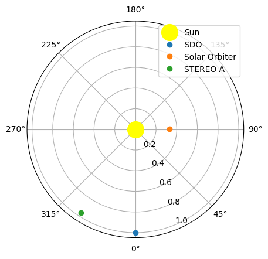
Process EUV Data for AR
We prepare the SDO/AIA data from level 1 to level 1.5 using aiapy package by (1) correcting the pointing keywords and (2) also correcting the instrument degradation.
from aiapy.calibrate import update_pointing, correct_degradation
from aiapy.calibrate.util import get_pointing_table, get_correction_tablepointing_table = get_pointing_table('JSOC', time_range=(m_aia.date-12*u.h, m_aia.date+12*u.h))pointing_tableQTable length=8
| ORIGIN | TELESCOP | DATE | T_START | T_STOP | T_HKVALS | VERSION | SC_Y_INRT_BIAS | SC_Z_INRT_BIAS | H_CAM1_IMSCALE | H_CAM1_X0 | H_CAM1_Y0 | H_CAM1_INSTROT | H_CAM2_IMSCALE | H_CAM2_X0 | H_CAM2_Y0 | H_CAM2_INSTROT | A_094_IMSCALE | A_094_X0 | A_094_Y0 | A_094_INSTROT | A_131_IMSCALE | A_131_X0 | A_131_Y0 | A_131_INSTROT | A_171_IMSCALE | A_171_X0 | A_171_Y0 | A_171_INSTROT | A_193_IMSCALE | A_193_X0 | A_193_Y0 | A_193_INSTROT | A_211_IMSCALE | A_211_X0 | A_211_Y0 | A_211_INSTROT | A_304_IMSCALE | A_304_X0 | A_304_Y0 | A_304_INSTROT | A_335_IMSCALE | A_335_X0 | A_335_Y0 | A_335_INSTROT | A_1600_IMSCALE | A_1600_X0 | A_1600_Y0 | A_1600_INSTROT | A_1700_IMSCALE | A_1700_X0 | A_1700_Y0 | A_1700_INSTROT | A_4500_IMSCALE | A_4500_X0 | A_4500_Y0 | A_4500_INSTROT | HMI_FSW_AL1_POSITION | HAL1POS | HMI_FSW_AL2_POSITION | HAL2POS | HMI_AL1_STATUS | HAL1STAT | HMI_AL2_STATUS | HAL2STAT | HMI_ISS_ERRGAINY | HIERRGNY | HMI_ISS_ERRGAINZ | HIERRGNZ | HMI_ISS_ERROFFY | HIERROFY | HMI_ISS_ERROFFZ | HIERROFZ | HMI_ISS_PZTOFFA | HIPZTOFA | HMI_ISS_PZTOFFB | HIPZTOFB | HMI_ISS_PZTOFFC | HIPZTOFC | HMI_ISS_PKT_YCOEF_A | HIYCOEFA | HMI_ISS_PKT_YCOEF_B | HIYCOEFB | HMI_ISS_PKT_YCOEF_C | HIYCOEFC | HMI_ISS_PKT_ZCOEF_A | HIZCOEFA | HMI_ISS_PKT_ZCOEF_B | HIZCOEFB | HMI_ISS_PKT_ZCOEF_C | HIZCOEFC | AIA_IS1_ERRGAINY | A1ERRGNY | AIA_IS1_ERRGAINZ | A1ERRGNZ | AIA_IS1_ERROFFY | A1ERROFY | AIA_IS1_ERROFFZ | A1ERROFZ | AIA_IS1_PZTGAINA | A1PZTGNA | AIA_IS1_PZTGAINB | A1PZTGNB | AIA_IS1_PZTGAINC | A1PZTGNC | AIA_IS1_PZTOFFA | A1PZTOFA | AIA_IS1_PZTOFFB | A1PZTOFB | AIA_IS1_PZTOFFC | A1PZTOFC | AIA_GT1_PKT_YCOEF_A | AGT1_YCA | AIA_GT1_PKT_YCOEF_B | AGT1_YCB | AIA_GT1_PKT_YCOEF_C | AGT1_YCC | AIA_GT1_PKT_ZCOEF_A | AGT1_ZCA | AIA_GT1_PKT_ZCOEF_B | AGT1_ZCB | AIA_GT1_PKT_ZCOEF_C | AGT1_ZCC | AIA_IS2_ERRGAINY | A2ERRGNY | AIA_IS2_ERRGAINZ | A2ERRGNZ | AIA_IS2_ERROFFY | A2ERROFY | AIA_IS2_ERROFFZ | A2ERROFZ | AIA_IS2_PZTGAINA | A2PZTGNA | AIA_IS2_PZTGAINB | A2PZTGNB | AIA_IS2_PZTGAINC | A2PZTGNC | AIA_IS2_PZTOFFA | A2PZTOFA | AIA_IS2_PZTOFFB | A2PZTOFB | AIA_IS2_PZTOFFC | A2PZTOFC | AIA_GT2_PKT_YCOEF_A | AGT2_YCA | AIA_GT2_PKT_YCOEF_B | AGT2_YCB | AIA_GT2_PKT_YCOEF_C | AGT2_YCC | AIA_GT2_PKT_ZCOEF_A | AGT2_ZCA | AIA_GT2_PKT_ZCOEF_B | AGT2_ZCB | AIA_GT2_PKT_ZCOEF_C | AGT2_ZCC | AIA_IS3_ERRGAINY | A3ERRGNY | AIA_IS3_ERRGAINZ | A3ERRGNZ | AIA_IS3_ERROFFY | A3ERROFY | AIA_IS3_ERROFFZ | A3ERROFZ | AIA_IS3_PZTGAINA | A3PZTGNA | AIA_IS3_PZTGAINB | A3PZTGNB | AIA_IS3_PZTGAINC | A3PZTGNC | AIA_IS3_PZTOFFA | A3PZTOFA | AIA_IS3_PZTOFFB | A3PZTOFB | AIA_IS3_PZTOFFC | A3PZTOFC | AIA_GT3_PKT_YCOEF_A | AGT3_YCA | AIA_GT3_PKT_YCOEF_B | AGT3_YCB | AIA_GT3_PKT_YCOEF_C | AGT3_YCC | AIA_GT3_PKT_ZCOEF_A | AGT3_ZCA | AIA_GT3_PKT_ZCOEF_B | AGT3_ZCB | AIA_GT3_PKT_ZCOEF_C | AGT3_ZCC | AIA_IS4_ERRGAINY | A4ERRGNY | AIA_IS4_ERRGAINZ | A4ERRGNZ | AIA_IS4_ERROFFY | A4ERROFY | AIA_IS4_ERROFFZ | A4ERROFZ | AIA_IS4_PZTGAINA | A4PZTGNA | AIA_IS4_PZTGAINB | A4PZTGNB | AIA_IS4_PZTGAINC | A4PZTGNC | AIA_IS4_PZTOFFA | A4PZTOFA | AIA_IS4_PZTOFFB | A4PZTOFB | AIA_IS4_PZTOFFC | A4PZTOFC | AIA_GT4_PKT_YCOEF_A | AGT4_YCA | AIA_GT4_PKT_YCOEF_B | AGT4_YCB | AIA_GT4_PKT_YCOEF_C | AGT4_YCC | AIA_GT4_PKT_ZCOEF_A | AGT4_ZCA | AIA_GT4_PKT_ZCOEF_B | AGT4_ZCB | AIA_GT4_PKT_ZCOEF_C | AGT4_ZCC |
|---|---|---|---|---|---|---|---|---|---|---|---|---|---|---|---|---|---|---|---|---|---|---|---|---|---|---|---|---|---|---|---|---|---|---|---|---|---|---|---|---|---|---|---|---|---|---|---|---|---|---|---|---|---|---|---|---|---|---|---|---|---|---|---|---|---|---|---|---|---|---|---|---|---|---|---|---|---|---|---|---|---|---|---|---|---|---|---|---|---|---|---|---|---|---|---|---|---|---|---|---|---|---|---|---|---|---|---|---|---|---|---|---|---|---|---|---|---|---|---|---|---|---|---|---|---|---|---|---|---|---|---|---|---|---|---|---|---|---|---|---|---|---|---|---|---|---|---|---|---|---|---|---|---|---|---|---|---|---|---|---|---|---|---|---|---|---|---|---|---|---|---|---|---|---|---|---|---|---|---|---|---|---|---|---|---|---|---|---|---|---|---|---|---|---|---|---|---|---|---|---|---|---|---|---|---|---|---|---|---|---|---|---|---|---|---|---|---|---|
| arcsec / pix | pix | pix | deg | arcsec / pix | pix | pix | deg | arcsec / pix | pix | pix | deg | arcsec / pix | pix | pix | deg | arcsec / pix | pix | pix | deg | arcsec / pix | pix | pix | deg | arcsec / pix | pix | pix | deg | arcsec / pix | pix | pix | deg | arcsec / pix | pix | pix | deg | arcsec / pix | pix | pix | deg | arcsec / pix | pix | pix | deg | arcsec / pix | pix | pix | deg | |||||||||||||||||||||||||||||||||||||||||||||||||||||||||||||||||||||||||||||||||||||||||||||||||||||||||||||||||||||||||||||||||||||||||||||||||||||||||||||||||||||||||||
| str12 | str3 | str20 | Time | Time | str20 | int64 | float64 | float64 | float64 | float64 | float64 | float64 | float64 | float64 | float64 | float64 | float64 | float64 | float64 | float64 | float64 | float64 | float64 | float64 | float64 | float64 | float64 | float64 | float64 | float64 | float64 | float64 | float64 | float64 | float64 | float64 | float64 | float64 | float64 | float64 | float64 | float64 | float64 | float64 | float64 | float64 | float64 | float64 | float64 | float64 | float64 | float64 | float64 | float64 | float64 | float64 | float64 | float64 | float64 | float64 | float64 | float64 | float64 | float64 | float64 | float64 | float64 | float64 | float64 | float64 | float64 | float64 | float64 | float64 | float64 | float64 | float64 | float64 | float64 | float64 | float64 | float64 | float64 | float64 | float64 | float64 | float64 | float64 | float64 | float64 | float64 | float64 | float64 | float64 | float64 | float64 | float64 | float64 | float64 | float64 | float64 | float64 | float64 | float64 | float64 | float64 | float64 | float64 | float64 | float64 | float64 | float64 | float64 | float64 | float64 | float64 | float64 | float64 | float64 | float64 | float64 | float64 | float64 | float64 | float64 | float64 | float64 | float64 | float64 | float64 | float64 | float64 | float64 | float64 | float64 | float64 | float64 | float64 | float64 | float64 | float64 | float64 | float64 | float64 | float64 | float64 | float64 | float64 | float64 | float64 | float64 | float64 | float64 | float64 | float64 | float64 | float64 | float64 | float64 | float64 | float64 | float64 | float64 | float64 | float64 | float64 | float64 | float64 | float64 | float64 | float64 | float64 | float64 | float64 | float64 | float64 | float64 | float64 | float64 | float64 | float64 | float64 | float64 | float64 | float64 | float64 | float64 | float64 | float64 | float64 | float64 | float64 | float64 | float64 | float64 | float64 | float64 | float64 | float64 | float64 | float64 | float64 | float64 | float64 | float64 | float64 | float64 | float64 | float64 | float64 | float64 | float64 | float64 | float64 | float64 | float64 | float64 | float64 |
| SDO/JSOC-SDP | SDO | 2022-03-30T16:51:58Z | 2022-03-29T12:00:00.000 | 2022-03-29T18:00:00.000 | 2022-03-27T00:00:00Z | 1 | -4.983 | 9.323 | 0.50489 | 2033.790039 | 2051.580078 | 180.013504 | 0.50486 | 2039.630005 | 2048.47998 | 179.929794 | 0.600109 | 2069.821533 | 2009.129517 | -0.13761 | 0.600698 | 2041.704346 | 2041.861694 | -0.138795 | 0.599489 | 2054.610596 | 2047.310181 | 0.019327 | 0.600714 | 2040.759888 | 2041.918091 | 0.057789 | 0.600758 | 2036.590942 | 2040.456055 | 0.056433 | 0.600165 | 2067.379883 | 2006.143433 | -0.131639 | 0.600737 | 2040.537598 | 2040.539795 | -0.142443 | 0.609373 | 2051.854492 | 2046.561401 | 0.019792 | 0.612898 | 2053.222168 | 2044.922974 | 0.020525 | 0.599945 | 2051.936768 | 2048.193359 | 0.020638 | 76.0 | 76.0 | 44.0 | 44.0 | 81.0 | 81.0 | 81.0 | 81.0 | -43.0 | -43.0 | -44.0 | -44.0 | -37.0 | -37.0 | 66.0 | 66.0 | -16.0 | -16.0 | -16.0 | -16.0 | -13.0 | -13.0 | -20920.0 | -20920.0 | -10460.0 | -10460.0 | -10460.0 | -10460.0 | 0.0 | 0.0 | -15098.0 | -15098.0 | -15098.0 | -15098.0 | -85.0 | -85.0 | -85.0 | -85.0 | -17.0 | -17.0 | 53.0 | 53.0 | -20.0 | -20.0 | -19.0 | -19.0 | -19.0 | -19.0 | -15.0 | -15.0 | -17.0 | -17.0 | 32.0 | 32.0 | 2048.0 | 2048.0 | 13900.0 | 13900.0 | 0.0 | 0.0 | 2048.0 | 2048.0 | 13900.0 | 13900.0 | 0.0 | 0.0 | -85.0 | -85.0 | -85.0 | -85.0 | 1.0 | 1.0 | 38.0 | 38.0 | -18.0 | -18.0 | -30.0 | -30.0 | -30.0 | -30.0 | 11.0 | 11.0 | 5.0 | 5.0 | -15.0 | -15.0 | 2048.0 | 2048.0 | 13900.0 | 13900.0 | 0.0 | 0.0 | 2048.0 | 2048.0 | 13900.0 | 13900.0 | 0.0 | 0.0 | -79.0 | -79.0 | -78.0 | -78.0 | 6.0 | 6.0 | 13.0 | 13.0 | -15.0 | -15.0 | -22.0 | -22.0 | -22.0 | -22.0 | -37.0 | -37.0 | 9.0 | 9.0 | 29.0 | 29.0 | 2048.0 | 2048.0 | 13900.0 | 13900.0 | 0.0 | 0.0 | 2048.0 | 2048.0 | 13900.0 | 13900.0 | 0.0 | 0.0 | -80.0 | -80.0 | -80.0 | -80.0 | 2.0 | 2.0 | -6.0 | -6.0 | -15.0 | -15.0 | -22.0 | -22.0 | -22.0 | -22.0 | 25.0 | 25.0 | 1.0 | 1.0 | -26.0 | -26.0 | 2048.0 | 2048.0 | 13900.0 | 13900.0 | 0.0 | 0.0 | 2048.0 | 2048.0 | 13900.0 | 13900.0 | 0.0 | 0.0 |
| SDO/JSOC-SDP | SDO | 2022-03-30T19:47:27Z | 2022-03-29T15:00:00.000 | 2022-03-29T21:00:00.000 | 2022-03-27T00:00:00Z | 1 | -4.983 | 9.323 | 0.50489 | 2033.790039 | 2051.580078 | 180.013504 | 0.50486 | 2039.630005 | 2048.47998 | 179.929794 | 0.600109 | 2069.970459 | 2009.175171 | -0.13761 | 0.600698 | 2041.645264 | 2041.656616 | -0.138795 | 0.599489 | 2054.492676 | 2047.263306 | 0.019327 | 0.600714 | 2040.754395 | 2041.985474 | 0.057789 | 0.600758 | 2036.581665 | 2040.463379 | 0.056433 | 0.600165 | 2068.61377 | 2006.88269 | -0.131639 | 0.600737 | 2040.461182 | 2040.399536 | -0.142443 | 0.609373 | 2051.754395 | 2046.54126 | 0.019792 | 0.612898 | 2053.122559 | 2044.913208 | 0.020525 | 0.599945 | 2051.810059 | 2048.120117 | 0.020638 | 76.0 | 76.0 | 44.0 | 44.0 | 81.0 | 81.0 | 81.0 | 81.0 | -43.0 | -43.0 | -44.0 | -44.0 | -37.0 | -37.0 | 66.0 | 66.0 | -16.0 | -16.0 | -16.0 | -16.0 | -13.0 | -13.0 | -20920.0 | -20920.0 | -10460.0 | -10460.0 | -10460.0 | -10460.0 | 0.0 | 0.0 | -15098.0 | -15098.0 | -15098.0 | -15098.0 | -85.0 | -85.0 | -85.0 | -85.0 | -17.0 | -17.0 | 53.0 | 53.0 | -20.0 | -20.0 | -19.0 | -19.0 | -19.0 | -19.0 | -15.0 | -15.0 | -17.0 | -17.0 | 32.0 | 32.0 | 2048.0 | 2048.0 | 13900.0 | 13900.0 | 0.0 | 0.0 | 2048.0 | 2048.0 | 13900.0 | 13900.0 | 0.0 | 0.0 | -85.0 | -85.0 | -85.0 | -85.0 | 1.0 | 1.0 | 38.0 | 38.0 | -18.0 | -18.0 | -30.0 | -30.0 | -30.0 | -30.0 | 11.0 | 11.0 | 5.0 | 5.0 | -15.0 | -15.0 | 2048.0 | 2048.0 | 13900.0 | 13900.0 | 0.0 | 0.0 | 2048.0 | 2048.0 | 13900.0 | 13900.0 | 0.0 | 0.0 | -79.0 | -79.0 | -78.0 | -78.0 | 6.0 | 6.0 | 13.0 | 13.0 | -15.0 | -15.0 | -22.0 | -22.0 | -22.0 | -22.0 | -37.0 | -37.0 | 9.0 | 9.0 | 29.0 | 29.0 | 2048.0 | 2048.0 | 13900.0 | 13900.0 | 0.0 | 0.0 | 2048.0 | 2048.0 | 13900.0 | 13900.0 | 0.0 | 0.0 | -80.0 | -80.0 | -80.0 | -80.0 | 2.0 | 2.0 | -6.0 | -6.0 | -15.0 | -15.0 | -22.0 | -22.0 | -22.0 | -22.0 | 25.0 | 25.0 | 1.0 | 1.0 | -26.0 | -26.0 | 2048.0 | 2048.0 | 13900.0 | 13900.0 | 0.0 | 0.0 | 2048.0 | 2048.0 | 13900.0 | 13900.0 | 0.0 | 0.0 |
| SDO/JSOC-SDP | SDO | 2022-03-30T22:07:31Z | 2022-03-29T18:00:00.000 | 2022-03-30T00:00:00.000 | 2022-03-27T00:00:00Z | 1 | -4.983 | 9.323 | 0.50489 | 2033.790039 | 2051.580078 | 180.013504 | 0.50486 | 2039.630005 | 2048.47998 | 179.929794 | 0.600109 | 2069.912842 | 2009.273682 | -0.13761 | 0.600698 | 2041.537964 | 2041.681763 | -0.138795 | 0.599489 | 2054.495117 | 2047.277954 | 0.019327 | 0.600714 | 2040.449951 | 2042.01123 | 0.057789 | 0.600758 | 2036.267212 | 2040.533203 | 0.056433 | 0.600165 | 2067.975586 | 2006.063599 | -0.131639 | 0.600737 | 2040.342285 | 2040.449707 | -0.142443 | 0.609373 | 2051.721436 | 2046.502808 | 0.019792 | 0.612898 | 2053.067627 | 2044.884644 | 0.020525 | 0.599945 | 2054.710693 | 2067.672607 | 0.020638 | 76.0 | 76.0 | 44.0 | 44.0 | 81.0 | 81.0 | 81.0 | 81.0 | -43.0 | -43.0 | -44.0 | -44.0 | -37.0 | -37.0 | 66.0 | 66.0 | -16.0 | -16.0 | -16.0 | -16.0 | -13.0 | -13.0 | -20920.0 | -20920.0 | -10460.0 | -10460.0 | -10460.0 | -10460.0 | 0.0 | 0.0 | -15098.0 | -15098.0 | -15098.0 | -15098.0 | -85.0 | -85.0 | -85.0 | -85.0 | -17.0 | -17.0 | 53.0 | 53.0 | -20.0 | -20.0 | -19.0 | -19.0 | -19.0 | -19.0 | -15.0 | -15.0 | -17.0 | -17.0 | 32.0 | 32.0 | 2048.0 | 2048.0 | 13900.0 | 13900.0 | 0.0 | 0.0 | 2048.0 | 2048.0 | 13900.0 | 13900.0 | 0.0 | 0.0 | -85.0 | -85.0 | -85.0 | -85.0 | 1.0 | 1.0 | 38.0 | 38.0 | -18.0 | -18.0 | -30.0 | -30.0 | -30.0 | -30.0 | 11.0 | 11.0 | 5.0 | 5.0 | -15.0 | -15.0 | 2048.0 | 2048.0 | 13900.0 | 13900.0 | 0.0 | 0.0 | 2048.0 | 2048.0 | 13900.0 | 13900.0 | 0.0 | 0.0 | -79.0 | -79.0 | -78.0 | -78.0 | 6.0 | 6.0 | 13.0 | 13.0 | -15.0 | -15.0 | -22.0 | -22.0 | -22.0 | -22.0 | -37.0 | -37.0 | 9.0 | 9.0 | 29.0 | 29.0 | 2048.0 | 2048.0 | 13900.0 | 13900.0 | 0.0 | 0.0 | 2048.0 | 2048.0 | 13900.0 | 13900.0 | 0.0 | 0.0 | -80.0 | -80.0 | -80.0 | -80.0 | 2.0 | 2.0 | -6.0 | -6.0 | -15.0 | -15.0 | -22.0 | -22.0 | -22.0 | -22.0 | 25.0 | 25.0 | 1.0 | 1.0 | -26.0 | -26.0 | 2048.0 | 2048.0 | 13900.0 | 13900.0 | 0.0 | 0.0 | 2048.0 | 2048.0 | 13900.0 | 13900.0 | 0.0 | 0.0 |
| SDO/JSOC-SDP | SDO | 2022-03-31T01:40:36Z | 2022-03-29T21:00:00.000 | 2022-03-30T03:00:00.000 | 2022-03-27T00:00:00Z | 1 | -4.983 | 9.323 | 0.50489 | 2033.790039 | 2051.580078 | 180.013504 | 0.50486 | 2039.630005 | 2048.47998 | 179.929794 | 0.600109 | 2069.808594 | 2009.097412 | -0.13761 | 0.600698 | 2041.29187 | 2041.739624 | -0.138795 | 0.599489 | 2054.483643 | 2047.225342 | 0.019327 | 0.600714 | 2040.017334 | 2041.981079 | 0.057789 | 0.600758 | 2035.796387 | 2040.480957 | 0.056433 | 0.600165 | 2067.6875 | 2006.059692 | -0.131639 | 0.600737 | 2040.373535 | 2040.357666 | -0.142443 | 0.609373 | 2051.715088 | 2046.387817 | 0.019792 | 0.612898 | 2053.051025 | 2044.796875 | 0.020525 | 0.599945 | 2051.040039 | 2047.589966 | 0.020638 | 76.0 | 76.0 | 44.0 | 44.0 | 81.0 | 81.0 | 81.0 | 81.0 | -43.0 | -43.0 | -44.0 | -44.0 | -37.0 | -37.0 | 66.0 | 66.0 | -16.0 | -16.0 | -16.0 | -16.0 | -13.0 | -13.0 | -20920.0 | -20920.0 | -10460.0 | -10460.0 | -10460.0 | -10460.0 | 0.0 | 0.0 | -15098.0 | -15098.0 | -15098.0 | -15098.0 | -85.0 | -85.0 | -85.0 | -85.0 | -17.0 | -17.0 | 53.0 | 53.0 | -20.0 | -20.0 | -19.0 | -19.0 | -19.0 | -19.0 | -15.0 | -15.0 | -17.0 | -17.0 | 32.0 | 32.0 | 2048.0 | 2048.0 | 13900.0 | 13900.0 | 0.0 | 0.0 | 2048.0 | 2048.0 | 13900.0 | 13900.0 | 0.0 | 0.0 | -85.0 | -85.0 | -85.0 | -85.0 | 1.0 | 1.0 | 38.0 | 38.0 | -18.0 | -18.0 | -30.0 | -30.0 | -30.0 | -30.0 | 11.0 | 11.0 | 5.0 | 5.0 | -15.0 | -15.0 | 2048.0 | 2048.0 | 13900.0 | 13900.0 | 0.0 | 0.0 | 2048.0 | 2048.0 | 13900.0 | 13900.0 | 0.0 | 0.0 | -79.0 | -79.0 | -78.0 | -78.0 | 6.0 | 6.0 | 13.0 | 13.0 | -15.0 | -15.0 | -22.0 | -22.0 | -22.0 | -22.0 | -37.0 | -37.0 | 9.0 | 9.0 | 29.0 | 29.0 | 2048.0 | 2048.0 | 13900.0 | 13900.0 | 0.0 | 0.0 | 2048.0 | 2048.0 | 13900.0 | 13900.0 | 0.0 | 0.0 | -80.0 | -80.0 | -80.0 | -80.0 | 2.0 | 2.0 | -6.0 | -6.0 | -15.0 | -15.0 | -22.0 | -22.0 | -22.0 | -22.0 | 25.0 | 25.0 | 1.0 | 1.0 | -26.0 | -26.0 | 2048.0 | 2048.0 | 13900.0 | 13900.0 | 0.0 | 0.0 | 2048.0 | 2048.0 | 13900.0 | 13900.0 | 0.0 | 0.0 |
| SDO/JSOC-SDP | SDO | 2022-03-31T04:51:55Z | 2022-03-30T00:00:00.000 | 2022-03-30T06:00:00.000 | 2022-03-27T00:00:00Z | 1 | -4.983 | 9.323 | 0.50489 | 2033.790039 | 2051.580078 | 180.013504 | 0.50486 | 2039.630005 | 2048.47998 | 179.929794 | 0.600109 | 2069.527588 | 2009.48877 | -0.13761 | 0.600698 | 2041.151978 | 2041.793945 | -0.138795 | 0.599489 | 2054.188965 | 2047.548828 | 0.019327 | 0.600714 | 2039.276611 | 2042.256714 | 0.057789 | 0.600758 | 2033.271851 | 2040.747559 | 0.056433 | 0.600165 | 2068.605957 | 2007.465942 | -0.131639 | 0.600737 | 2039.602539 | 2040.08252 | -0.142443 | 0.609373 | 2051.780029 | 2046.560059 | 0.019792 | 0.612898 | 2052.833008 | 2044.995972 | 0.020525 | 0.599945 | 2051.76001 | 2048.25 | 0.020638 | 76.0 | 76.0 | 44.0 | 44.0 | 81.0 | 81.0 | 81.0 | 81.0 | -43.0 | -43.0 | -44.0 | -44.0 | -37.0 | -37.0 | 66.0 | 66.0 | -16.0 | -16.0 | -16.0 | -16.0 | -13.0 | -13.0 | -20920.0 | -20920.0 | -10460.0 | -10460.0 | -10460.0 | -10460.0 | 0.0 | 0.0 | -15098.0 | -15098.0 | -15098.0 | -15098.0 | -85.0 | -85.0 | -85.0 | -85.0 | -17.0 | -17.0 | 53.0 | 53.0 | -20.0 | -20.0 | -19.0 | -19.0 | -19.0 | -19.0 | -15.0 | -15.0 | -17.0 | -17.0 | 32.0 | 32.0 | 2048.0 | 2048.0 | 13900.0 | 13900.0 | 0.0 | 0.0 | 2048.0 | 2048.0 | 13900.0 | 13900.0 | 0.0 | 0.0 | -85.0 | -85.0 | -85.0 | -85.0 | 1.0 | 1.0 | 38.0 | 38.0 | -18.0 | -18.0 | -30.0 | -30.0 | -30.0 | -30.0 | 11.0 | 11.0 | 5.0 | 5.0 | -15.0 | -15.0 | 2048.0 | 2048.0 | 13900.0 | 13900.0 | 0.0 | 0.0 | 2048.0 | 2048.0 | 13900.0 | 13900.0 | 0.0 | 0.0 | -79.0 | -79.0 | -78.0 | -78.0 | 6.0 | 6.0 | 13.0 | 13.0 | -15.0 | -15.0 | -22.0 | -22.0 | -22.0 | -22.0 | -37.0 | -37.0 | 9.0 | 9.0 | 29.0 | 29.0 | 2048.0 | 2048.0 | 13900.0 | 13900.0 | 0.0 | 0.0 | 2048.0 | 2048.0 | 13900.0 | 13900.0 | 0.0 | 0.0 | -80.0 | -80.0 | -80.0 | -80.0 | 2.0 | 2.0 | -6.0 | -6.0 | -15.0 | -15.0 | -22.0 | -22.0 | -22.0 | -22.0 | 25.0 | 25.0 | 1.0 | 1.0 | -26.0 | -26.0 | 2048.0 | 2048.0 | 13900.0 | 13900.0 | 0.0 | 0.0 | 2048.0 | 2048.0 | 13900.0 | 13900.0 | 0.0 | 0.0 |
| SDO/JSOC-SDP | SDO | 2022-03-31T07:53:59Z | 2022-03-30T03:00:00.000 | 2022-03-30T09:00:00.000 | 2022-03-27T00:00:00Z | 1 | -4.983 | 9.323 | 0.50489 | 2033.790039 | 2051.580078 | 180.013504 | 0.50486 | 2039.630005 | 2048.47998 | 179.929794 | 0.600109 | 2069.494873 | 2009.120605 | -0.13761 | 0.600698 | 2041.200684 | 2041.945679 | -0.138795 | 0.599489 | 2054.434326 | 2047.566284 | 0.019327 | 0.600714 | 2039.73645 | 2042.167725 | 0.057789 | 0.600758 | 2035.616821 | 2040.686646 | 0.056433 | 0.600165 | 2067.87793 | 2006.530029 | -0.131639 | 0.600737 | 2040.036011 | 2040.598633 | -0.142443 | 0.609373 | 2051.646729 | 2046.790283 | 0.019792 | 0.612898 | 2053.012695 | 2045.160645 | 0.020525 | 0.599945 | 2050.919922 | 2047.823364 | 0.020638 | 76.0 | 76.0 | 44.0 | 44.0 | 81.0 | 81.0 | 81.0 | 81.0 | -43.0 | -43.0 | -44.0 | -44.0 | -37.0 | -37.0 | 66.0 | 66.0 | -16.0 | -16.0 | -16.0 | -16.0 | -13.0 | -13.0 | -20920.0 | -20920.0 | -10460.0 | -10460.0 | -10460.0 | -10460.0 | 0.0 | 0.0 | -15098.0 | -15098.0 | -15098.0 | -15098.0 | -85.0 | -85.0 | -85.0 | -85.0 | -17.0 | -17.0 | 53.0 | 53.0 | -20.0 | -20.0 | -19.0 | -19.0 | -19.0 | -19.0 | -15.0 | -15.0 | -17.0 | -17.0 | 32.0 | 32.0 | 2048.0 | 2048.0 | 13900.0 | 13900.0 | 0.0 | 0.0 | 2048.0 | 2048.0 | 13900.0 | 13900.0 | 0.0 | 0.0 | -85.0 | -85.0 | -85.0 | -85.0 | 1.0 | 1.0 | 38.0 | 38.0 | -18.0 | -18.0 | -30.0 | -30.0 | -30.0 | -30.0 | 11.0 | 11.0 | 5.0 | 5.0 | -15.0 | -15.0 | 2048.0 | 2048.0 | 13900.0 | 13900.0 | 0.0 | 0.0 | 2048.0 | 2048.0 | 13900.0 | 13900.0 | 0.0 | 0.0 | -79.0 | -79.0 | -78.0 | -78.0 | 6.0 | 6.0 | 13.0 | 13.0 | -15.0 | -15.0 | -22.0 | -22.0 | -22.0 | -22.0 | -37.0 | -37.0 | 9.0 | 9.0 | 29.0 | 29.0 | 2048.0 | 2048.0 | 13900.0 | 13900.0 | 0.0 | 0.0 | 2048.0 | 2048.0 | 13900.0 | 13900.0 | 0.0 | 0.0 | -80.0 | -80.0 | -80.0 | -80.0 | 2.0 | 2.0 | -6.0 | -6.0 | -15.0 | -15.0 | -22.0 | -22.0 | -22.0 | -22.0 | 25.0 | 25.0 | 1.0 | 1.0 | -26.0 | -26.0 | 2048.0 | 2048.0 | 13900.0 | 13900.0 | 0.0 | 0.0 | 2048.0 | 2048.0 | 13900.0 | 13900.0 | 0.0 | 0.0 |
| SDO/JSOC-SDP | SDO | 2022-03-31T10:52:02Z | 2022-03-30T06:00:00.000 | 2022-03-30T12:00:00.000 | 2022-03-27T00:00:00Z | 1 | -4.983 | 9.323 | 0.50489 | 2033.790039 | 2051.580078 | 180.013504 | 0.50486 | 2039.630005 | 2048.47998 | 179.929794 | 0.600109 | 2069.394287 | 2009.004272 | -0.13761 | 0.600698 | 2041.256226 | 2041.89917 | -0.138795 | 0.599489 | 2054.35498 | 2047.540771 | 0.019327 | 0.600714 | 2039.777466 | 2041.951416 | 0.057789 | 0.600758 | 2035.64502 | 2040.479126 | 0.056433 | 0.600165 | 2066.549072 | 2005.698975 | -0.131639 | 0.600737 | 2040.107788 | 2040.618042 | -0.142443 | 0.609373 | 2051.701416 | 2046.803101 | 0.019792 | 0.612898 | 2053.085449 | 2045.166504 | 0.020525 | 0.599945 | 2051.703369 | 2048.419922 | 0.020638 | 76.0 | 76.0 | 44.0 | 44.0 | 81.0 | 81.0 | 81.0 | 81.0 | -43.0 | -43.0 | -44.0 | -44.0 | -37.0 | -37.0 | 66.0 | 66.0 | -16.0 | -16.0 | -16.0 | -16.0 | -13.0 | -13.0 | -20920.0 | -20920.0 | -10460.0 | -10460.0 | -10460.0 | -10460.0 | 0.0 | 0.0 | -15098.0 | -15098.0 | -15098.0 | -15098.0 | -85.0 | -85.0 | -85.0 | -85.0 | -17.0 | -17.0 | 53.0 | 53.0 | -20.0 | -20.0 | -19.0 | -19.0 | -19.0 | -19.0 | -15.0 | -15.0 | -17.0 | -17.0 | 32.0 | 32.0 | 2048.0 | 2048.0 | 13900.0 | 13900.0 | 0.0 | 0.0 | 2048.0 | 2048.0 | 13900.0 | 13900.0 | 0.0 | 0.0 | -85.0 | -85.0 | -85.0 | -85.0 | 1.0 | 1.0 | 38.0 | 38.0 | -18.0 | -18.0 | -30.0 | -30.0 | -30.0 | -30.0 | 11.0 | 11.0 | 5.0 | 5.0 | -15.0 | -15.0 | 2048.0 | 2048.0 | 13900.0 | 13900.0 | 0.0 | 0.0 | 2048.0 | 2048.0 | 13900.0 | 13900.0 | 0.0 | 0.0 | -79.0 | -79.0 | -78.0 | -78.0 | 6.0 | 6.0 | 13.0 | 13.0 | -15.0 | -15.0 | -22.0 | -22.0 | -22.0 | -22.0 | -37.0 | -37.0 | 9.0 | 9.0 | 29.0 | 29.0 | 2048.0 | 2048.0 | 13900.0 | 13900.0 | 0.0 | 0.0 | 2048.0 | 2048.0 | 13900.0 | 13900.0 | 0.0 | 0.0 | -80.0 | -80.0 | -80.0 | -80.0 | 2.0 | 2.0 | -6.0 | -6.0 | -15.0 | -15.0 | -22.0 | -22.0 | -22.0 | -22.0 | 25.0 | 25.0 | 1.0 | 1.0 | -26.0 | -26.0 | 2048.0 | 2048.0 | 13900.0 | 13900.0 | 0.0 | 0.0 | 2048.0 | 2048.0 | 13900.0 | 13900.0 | 0.0 | 0.0 |
| SDO/JSOC-SDP | SDO | 2022-03-31T13:41:38Z | 2022-03-30T09:00:00.000 | 2022-03-30T15:00:00.000 | 2022-03-27T00:00:00Z | 1 | -4.983 | 9.323 | 0.50489 | 2033.790039 | 2051.580078 | 180.013504 | 0.50486 | 2039.630005 | 2048.47998 | 179.929794 | 0.600109 | 2069.457764 | 2008.996338 | -0.13761 | 0.600698 | 2041.418945 | 2041.971558 | -0.138795 | 0.599489 | 2054.505127 | 2047.432739 | 0.019327 | 0.600714 | 2039.960205 | 2041.846069 | 0.057789 | 0.600758 | 2035.748047 | 2040.355347 | 0.056433 | 0.600165 | 2067.651611 | 2006.154053 | -0.131639 | 0.600737 | 2040.233398 | 2040.649048 | -0.142443 | 0.609373 | 2051.861572 | 2046.778931 | 0.019792 | 0.612898 | 2053.227539 | 2045.158691 | 0.020525 | 0.599945 | 2051.843262 | 2048.419922 | 0.020638 | 76.0 | 76.0 | 44.0 | 44.0 | 81.0 | 81.0 | 81.0 | 81.0 | -43.0 | -43.0 | -44.0 | -44.0 | -37.0 | -37.0 | 66.0 | 66.0 | -16.0 | -16.0 | -16.0 | -16.0 | -13.0 | -13.0 | -20920.0 | -20920.0 | -10460.0 | -10460.0 | -10460.0 | -10460.0 | 0.0 | 0.0 | -15098.0 | -15098.0 | -15098.0 | -15098.0 | -85.0 | -85.0 | -85.0 | -85.0 | -17.0 | -17.0 | 53.0 | 53.0 | -20.0 | -20.0 | -19.0 | -19.0 | -19.0 | -19.0 | -15.0 | -15.0 | -17.0 | -17.0 | 32.0 | 32.0 | 2048.0 | 2048.0 | 13900.0 | 13900.0 | 0.0 | 0.0 | 2048.0 | 2048.0 | 13900.0 | 13900.0 | 0.0 | 0.0 | -85.0 | -85.0 | -85.0 | -85.0 | 1.0 | 1.0 | 38.0 | 38.0 | -18.0 | -18.0 | -30.0 | -30.0 | -30.0 | -30.0 | 11.0 | 11.0 | 5.0 | 5.0 | -15.0 | -15.0 | 2048.0 | 2048.0 | 13900.0 | 13900.0 | 0.0 | 0.0 | 2048.0 | 2048.0 | 13900.0 | 13900.0 | 0.0 | 0.0 | -79.0 | -79.0 | -78.0 | -78.0 | 6.0 | 6.0 | 13.0 | 13.0 | -15.0 | -15.0 | -22.0 | -22.0 | -22.0 | -22.0 | -37.0 | -37.0 | 9.0 | 9.0 | 29.0 | 29.0 | 2048.0 | 2048.0 | 13900.0 | 13900.0 | 0.0 | 0.0 | 2048.0 | 2048.0 | 13900.0 | 13900.0 | 0.0 | 0.0 | -80.0 | -80.0 | -80.0 | -80.0 | 2.0 | 2.0 | -6.0 | -6.0 | -15.0 | -15.0 | -22.0 | -22.0 | -22.0 | -22.0 | 25.0 | 25.0 | 1.0 | 1.0 | -26.0 | -26.0 | 2048.0 | 2048.0 | 13900.0 | 13900.0 | 0.0 | 0.0 | 2048.0 | 2048.0 | 13900.0 | 13900.0 | 0.0 | 0.0 |
correction_table = get_correction_table('JSOC')correction_tableQTable length=665
| DATE | VER_NUM | WAVE_STR | WAVELNTH | T_START | T_STOP | EFFA_P1 | EFFA_P2 | EFFA_P3 | EFF_AREA | EFF_WVLN |
|---|---|---|---|---|---|---|---|---|---|---|
| Angstrom | cm2 | Angstrom | ||||||||
| str20 | int64 | str9 | float64 | Time | Time | float64 | float64 | float64 | float64 | float64 |
| 2020-11-02T11:14:52Z | 10 | 131_THICK | 131.0 | 2010-03-24T00:00:00.000 | 2011-02-24T19:00:00.000 | -0.000383 | 0.0 | 0.0 | 0.101769 | 131.199997 |
| 2017-12-10T05:05:04Z | 8 | 131_THICK | 131.0 | 2010-03-24T00:00:00.000 | 2011-02-24T19:00:00.000 | -0.000324 | 0.0 | 0.0 | 0.092281 | 131.199997 |
| 2020-07-06T21:54:29Z | 9 | 131_THICK | 131.0 | 2010-03-24T00:00:00.000 | 2011-02-24T19:00:00.000 | -0.000377 | 0.0 | 0.0 | 0.101531 | 131.199997 |
| 2011-09-29T00:00:00Z | 1 | 131_THICK | 131.0 | 2010-03-24T00:00:00.000 | 2030-04-30T23:59:57.000 | 0.0 | 0.0 | 0.0 | 0.097468 | 131.199997 |
| 2012-01-05T00:00:00Z | 2 | 131_THICK | 131.0 | 2010-03-24T00:00:00.000 | 2011-02-24T19:00:00.000 | 0.0 | 0.0 | 0.0 | 0.075027 | 131.199997 |
| 2010-11-23T00:00:00Z | 1 | 131_THICK | 131.0 | 2010-03-24T00:00:00.000 | 2011-03-24T00:00:00.000 | 0.0 | 0.0 | 0.0 | 0.097 | 131.199997 |
| 2012-09-26T00:00:00Z | 3 | 131_THICK | 131.0 | 2010-03-24T00:00:00.000 | 2011-02-24T19:00:00.000 | 0.0 | 0.0 | 0.0 | 0.075027 | 131.199997 |
| 2011-04-29T00:00:00Z | 1 | 131_THICK | 131.0 | 2010-03-24T00:00:00.000 | 2012-01-01T00:00:00.000 | 0.0 | 0.0 | 0.0 | 0.097 | 131.199997 |
| 2020-11-02T11:14:52Z | 10 | 131_THIN | 131.0 | 2010-03-24T00:00:00.000 | 2011-02-24T19:00:00.000 | -0.000383 | 0.0 | 0.0 | 1.223503 | 131.199997 |
| ... | ... | ... | ... | ... | ... | ... | ... | ... | ... | ... |
| 2020-11-02T11:14:52Z | 10 | 335_THICK | 335.0 | 2020-06-01T12:00:00.000 | 2030-05-01T00:00:00.000 | 0.0 | 0.0 | 0.0 | 0.006929 | 335.399994 |
| 2020-11-02T11:14:52Z | 10 | 335_THIN | 335.0 | 2020-06-01T12:00:00.000 | 2030-05-01T00:00:00.000 | 0.0 | 0.0 | 0.0 | 0.009789 | 335.399994 |
| 2020-07-06T21:54:47Z | 9 | 335_THIN | 335.0 | 2020-06-01T12:00:00.000 | 2030-05-01T00:00:00.000 | 0.0 | 0.0 | 0.0 | 0.009279 | 335.399994 |
| 2020-11-19T19:00:00Z | 10 | 94_THICK | 94.0 | 2020-06-01T12:00:00.000 | 2030-05-01T00:00:00.000 | 0.0 | 0.0 | 0.0 | 0.193237 | 93.900002 |
| 2020-11-02T11:14:52Z | 10 | 94_THICK | 94.0 | 2020-06-01T12:00:00.000 | 2030-05-01T00:00:00.000 | 0.0 | 0.0 | 0.0 | 0.20261 | 93.900002 |
| 2020-07-06T21:54:28Z | 9 | 94_THICK | 94.0 | 2020-06-01T12:00:00.000 | 2030-05-01T00:00:00.000 | 0.0 | 0.0 | 0.0 | 0.213493 | 93.900002 |
| 2020-07-06T21:54:28Z | 9 | 94_THIN | 94.0 | 2020-06-01T12:00:00.000 | 2030-05-01T00:00:00.000 | 0.0 | 0.0 | 0.0 | 0.29744 | 93.900002 |
| 2020-11-19T19:00:00Z | 10 | 94_THIN | 94.0 | 2020-06-01T12:00:00.000 | 2030-05-01T00:00:00.000 | 0.0 | 0.0 | 0.0 | 0.26922 | 93.900002 |
| 2020-11-02T11:14:52Z | 10 | 94_THIN | 94.0 | 2020-06-01T12:00:00.000 | 2030-05-01T00:00:00.000 | 0.0 | 0.0 | 0.0 | 0.282278 | 93.900002 |
m_aia.peek(vmin=0, vmax=8000)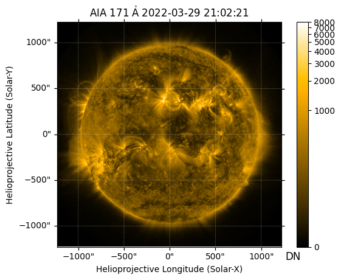
m_aia = correct_degradation(update_pointing(m_aia, pointing_table=pointing_table), correction_table=correction_table)m_aia.peek(vmin=0, vmax=8000)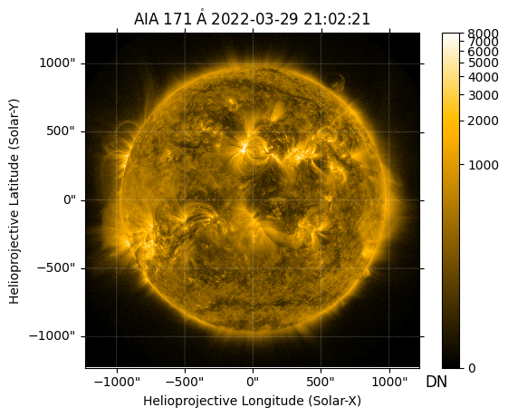
The SDO/AIA and STEREO-A/SECCHI/EUVI data are not been normalized for exposure time, whereas the Solar Orbiter/EUI/FSI data (level 2) are normalized for exposure time.
m_secchi.peek()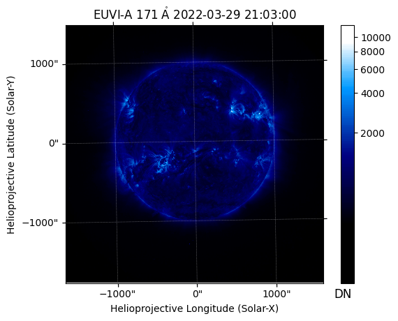
m_eui.peek()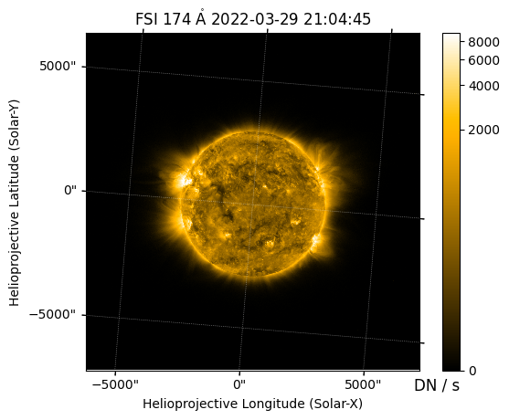
We normalize the SDO/AIA and STEREO-A/SECCHI/EUVI data for exposure time.
m_aia = m_aia / m_aia.exposure_time
m_secchi = m_secchi / m_secchi.exposure_timem_aia.peek()m_secchi.peek()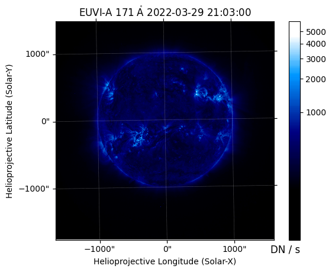
We can plot the position of the corrected center of the AR on the EUV maps.
fig = plt.figure(figsize=(15, 5))
for i, m in enumerate([m_aia, m_eui, m_secchi]):
ax = fig.add_subplot(1, 3, i+1, projection=m)
m.plot(axes=ax, clip_interval=(1, 99.99)*u.percent)
ax.plot_coord(ar_center_corrected, marker='o', color='C3')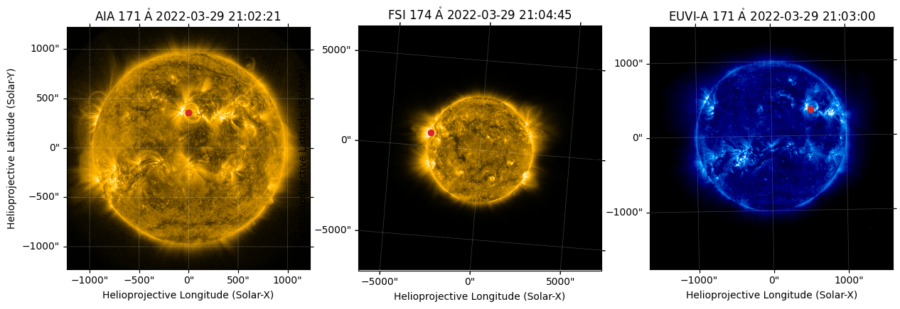
We can plot the region of interest on the EUV maps.
ar_width = 700*u.arcsec
ar_height = 700*u.arcsecfig = plt.figure(figsize=(15, 5))
for i, m in enumerate([m_aia, m_eui, m_secchi]):
ax = fig.add_subplot(1, 3, i+1, projection=m)
m.plot(axes=ax, clip_interval=(1, 99.99)*u.percent)
ar_center_corrected_transformed = ar_center_corrected.transform_to(m.coordinate_frame)
blc = SkyCoord(Tx=ar_center_corrected_transformed.Tx-ar_width/2,
Ty=ar_center_corrected_transformed.Ty-ar_height/2,
frame=ar_center_corrected_transformed)
m.draw_quadrangle(blc, width=ar_width, height=ar_height, edgecolor='C3', lw=1)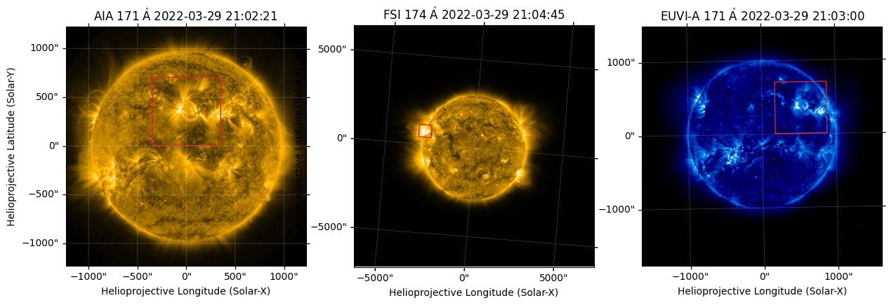
We can rotate the maps such that the y-axis of the images is aligned with the solar north using sunpy.map.Map.rotate.
fig = plt.figure(figsize=(15, 5))
for i, m in enumerate([m_aia, m_eui, m_secchi]):
ax = fig.add_subplot(1, 3, i+1, projection=m)
m_rot = m.rotate(missing=0.0)
m_rot.plot(axes=ax, clip_interval=(1, 99.99)*u.percent)
ar_center_corrected_transformed = ar_center_corrected.transform_to(m_rot.coordinate_frame)
blc = SkyCoord(Tx=ar_center_corrected_transformed.Tx-ar_width/2,
Ty=ar_center_corrected_transformed.Ty-ar_height/2,
frame=ar_center_corrected_transformed)
m_rot.draw_quadrangle(blc, width=ar_width, height=ar_height, edgecolor='C3', lw=1)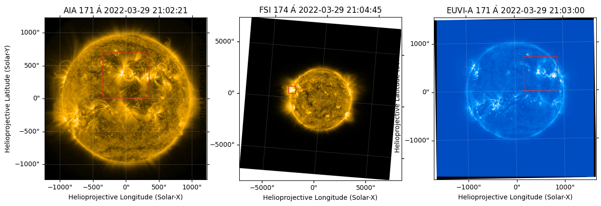
We can now crop each full disk image to the appropriate region.
m_cutouts = []
for m in [m_aia, m_eui, m_secchi]:
ar_center_corrected_transformed = ar_center_corrected.transform_to(m.coordinate_frame)
blc = SkyCoord(Tx=ar_center_corrected_transformed.Tx-ar_width/2,
Ty=ar_center_corrected_transformed.Ty-ar_height/2,
frame=ar_center_corrected_transformed)
# Each map is rotated prior to submapping such that the selection is aligned with the coordinate grid
m_rot = m.rotate(missing=0.0)
m_cutout = m_rot.submap(blc, width=ar_width, height=ar_height)
m_cutouts.append(m_cutout)fig = plt.figure(figsize=(15, 5))
for i, m in enumerate(m_cutouts):
ax = fig.add_subplot(1, 3, i+1, projection=m)
m.plot(axes=ax, clip_interval=(1, 99.99)*u.percent)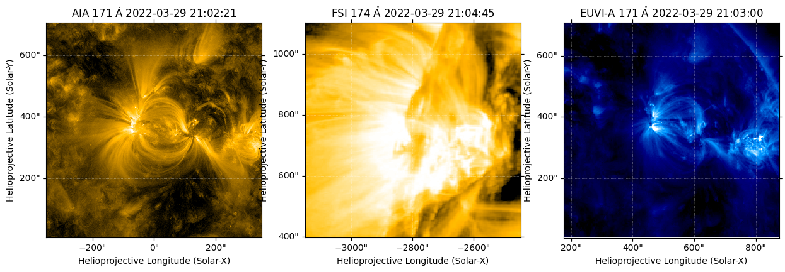
Calculate PFSS from HMI Synoptic Magnetogram
We can calculate a potential field source surface (PFSS) solution from the HMI synoptic magnetogram using sunkit-magex package.
We first resample the HMI synoptic map to speed up the calculation of our field extrapolation.
m_hmi.data.shape(1440, 3600)m_hmi_resample = m_hmi.resample((1080, 540)*u.pix)m_hmi_resample.data.shape(540, 1080)from sunkit_magex import pfssnr = 70 # number of cells in the radial direction
rss = 2.5 # radius of the source surface in R_sun
pfss_input = pfss.Input(m_hmi_resample, nr, rss)pfss_output = pfss.pfss(pfss_input)Let’s plot the radial component of the magnetic field at the source surface (2.5 Rs) and the polarity inversion lines (PILs).
fig = plt.figure()
ax = fig.add_subplot(111, projection=pfss_output.source_surface_br)
im = pfss_output.source_surface_br.plot(axes=ax)
ax.plot_coord(pfss_output.source_surface_pils[0], color='k')
fig.colorbar(im, ax=ax);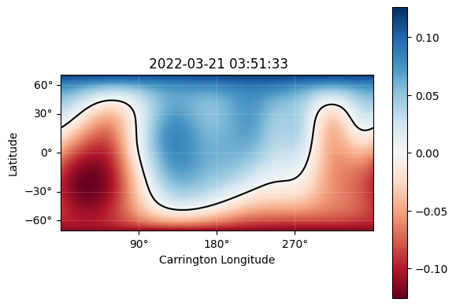
Trace Magnetic Field Lines
Let’s trace some field lines through the extrapolated field.
To do this, we need to choose a set of seed points from which to trace our field lines. We want to select only the seed points that are within a certain area around the active region. We need to make the following transformations because we want to express our boundaries in terms of the active region boundary as identified by our SDO/AIA cutout.
change_obstime_frame = lambda x,y: x.replicate_without_data(observer=x.observer.replicate(obstime=y), obstime=y)new_frame = change_obstime_frame(m_hmi.coordinate_frame, m_cutouts[0].date)
new_frame<HeliographicCarrington Frame (obstime=2022-03-29T21:02:21.350, rsun=695700.0 km, observer=<HeliographicStonyhurst Coordinate (obstime=2022-03-29T21:02:21.350, rsun=695700.0 km): (lon, lat, radius) in (deg, deg, m)
(0., -7.02110576, 1.48994814e+11)>)>blc_ar_synop = change_obstime(m_cutouts[0].bottom_left_coord.transform_to(new_frame),
m_hmi.date)
trc_ar_synop = change_obstime(m_cutouts[0].top_right_coord.transform_to(new_frame),
m_hmi.date)We mask all those points that are above -10 G and fall outside of the bounding box defined above.
masked_pix_y, masked_pix_x = np.where(m_hmi_resample.data < -1e1)
seeds = m_hmi_resample.pixel_to_world(masked_pix_x*u.pix, masked_pix_y*u.pix).make_3d()
in_lon = np.logical_and(seeds.lon > blc_ar_synop.lon, seeds.lon < trc_ar_synop.lon)
in_lat = np.logical_and(seeds.lat > blc_ar_synop.lat, seeds.lat < trc_ar_synop.lat)
seeds = seeds[np.where(np.logical_and(in_lon, in_lat))]
seeds<HeliographicCarrington Coordinate (obstime=2022-03-21T03:51:33.000, rsun=695700.0 km, observer=<HeliographicStonyhurst Coordinate (obstime=2022-03-21T03:51:33.000, rsun=695700.0 km): (lon, lat, radius) in (deg, deg, m)
(0., -7.02110576, 1.48994814e+11)>): (lon, lat, radius) in (deg, deg, km)
[(48.88333333, -5.63254256, 695700.),
(69.55 , -5.63254256, 695700.),
(74.88333333, -5.63254256, 695700.), ...,
(62.55 , 41.38466759, 695700.),
(63.88333333, 41.38466759, 695700.),
(71.55 , 41.38466759, 695700.)]>We can trace field lines from seeds specified above.
ds = 0.01
max_steps = int(np.ceil(10 * nr / ds))
tracer = pfss.tracing.PerformanceTracer(step_size=ds, max_steps=max_steps)
fieldlines = tracer.trace(SkyCoord(seeds), pfss_output)We also want to adjust obstime of all coordinates to coincide with AR at disk center. By default, each field line will have the obstime of the map that the field extrapolation was computed from. Additionally, we will choose only the close field lines.
fieldlines.closed_field_lines[0].coords.observer<HeliographicStonyhurst Coordinate (obstime=2022-03-21T03:51:33.000, rsun=695700.0 km): (lon, lat, radius) in (deg, deg, m)
(0., -7.02110576, 1.48994814e+11)>fline_coords = [change_obstime(f.coords, m_aia.date) for f in fieldlines.closed_field_lines if f.coords.shape[0]>500]len(fline_coords)1762fline_coords[0].observer<HeliographicStonyhurst Coordinate (obstime=2022-03-29T21:02:21.350, rsun=695700.0 km): (lon, lat, radius) in (deg, deg, m)
(0., -7.02110576, 1.48994814e+11)>Finally, let’s plot these field lines on top of our EUV images.
fig = plt.figure(figsize=(18, 5))
for i, m in enumerate(m_cutouts):
ax = fig.add_subplot(1, 3, i+1, projection=m)
m.plot(axes=ax, title=f'{m.observatory} {m.detector} {m.wavelength.to_string(format="latex")}')
bounds = ax.axis()
for c in fline_coords[::5]:
ax.plot_coord(c, lw=1, color='C2', alpha=0.75)
ax.axis(bounds)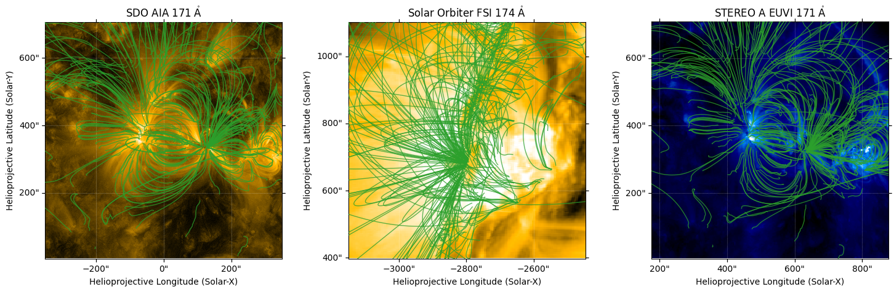
Figure 1 from the SunPy Paper (2023)
We can plot Figure 1 from the SunPy paper (2023).
from matplotlib.patches import ConnectionPatch
from matplotlib.gridspec import GridSpecdef add_connectors(ax1, ax2, p1, p2, color='k', lw=1):
con1 = ConnectionPatch(
(0, 1), ax1.wcs.world_to_pixel(p1), 'axes fraction', 'data', axesA=ax2, axesB=ax1,
arrowstyle='-', color=color, lw=lw
)
con2 = ConnectionPatch(
(1, 1), ax1.wcs.world_to_pixel(p2), 'axes fraction', 'data', axesA=ax2, axesB=ax1,
arrowstyle='-', color=color, lw=lw
)
ax2.add_artist(con1)
ax2.add_artist(con2)
h_w_ratio = 21 / 18
width = 12
frame_color = 'C3'
fig = plt.figure(figsize=(width, width*h_w_ratio))
gs = GridSpec(3, 3, figure=fig)
# Plot HMI synoptic map
ax = fig.add_subplot(gs[0, :2], projection=m_hmi)
m_hmi.plot(axes=ax, title='HMI Synoptic Magnetogram (CR 2255)')
m_hmi.draw_quadrangle(blc_ar_synop, top_right=trc_ar_synop, color=frame_color)
ax.coords[0].grid(color='k')
ax.coords[1].grid(color='k')
# Plot spacecraft locations
ax = fig.add_subplot(gs[0, 2], projection='polar')
ax.plot(0, 0, marker='o', markersize=15, label='Sun', color='yellow')
for m in m_cutouts:
sat = m.observatory
coord = m.observer_coordinate
ax.plot(coord.lon.to('rad'), coord.radius.to(u.AU), 'o', label=sat)
ax.text(coord.lon.to_value('rad')*1.15, coord.radius.to_value(u.AU)*0.95, sat)
ax.set_theta_zero_location('S')
ax.set_rlabel_position(225)
ax.set_rlim(0, 1.1)
# Plot full-disk EUV images
full_disk_axes = []
for i, m in enumerate([m_aia, m_eui, m_secchi]):
ax = fig.add_subplot(gs[1, i], projection=m)
m.plot(axes=ax, clip_interval=(1, 99.99)*u.percent, title=f'{m.observatory} {m.detector} {m.wavelength.to_string(format="latex")}')
m.draw_quadrangle(m_cutouts[i].bottom_left_coord, top_right=m_cutouts[i].top_right_coord, color=frame_color, lw=1)
if i:
ax.coords[1].set_axislabel(' ')
ax.coords[0].set_axislabel(' ')
full_disk_axes.append(ax)
ax.coords[1].set_ticklabel(rotation=90)
# Plot EUV cutouts with field lines
for i, m in enumerate(m_cutouts):
ax = fig.add_subplot(gs[2, i], projection=m)
m.plot(
axes=ax,
title=False,
clip_interval=(1, 99.99)*u.percent,
)
bounds = ax.axis()
for c in fline_coords[::8]:
ax.plot_coord(c, lw=1, color='C2', alpha=0.75)
ax.axis(bounds)
if i:
ax.coords[1].set_axislabel(' ')
bottom_right = SkyCoord(Tx=m_cutouts[i].top_right_coord.Tx, Ty=m_cutouts[i].bottom_left_coord.Ty, frame=m_cutouts[i].coordinate_frame)
add_connectors(full_disk_axes[i], ax, m_cutouts[i].bottom_left_coord, bottom_right, color=frame_color, lw=1)
ax.grid(alpha=0)
ax.coords[0].set_ticks(direction='in', color=frame_color)
ax.coords[1].set_ticks(direction='in', color=frame_color)
ax.coords[0].frame.set_color(frame_color)
ax.coords[0].frame.set_linewidth(1)
ax.coords[1].frame.set_color(frame_color)
ax.coords[1].frame.set_linewidth(1)
ax.coords[1].set_ticklabel(rotation=90)
plt.subplots_adjust(hspace=0.0)
plt.show()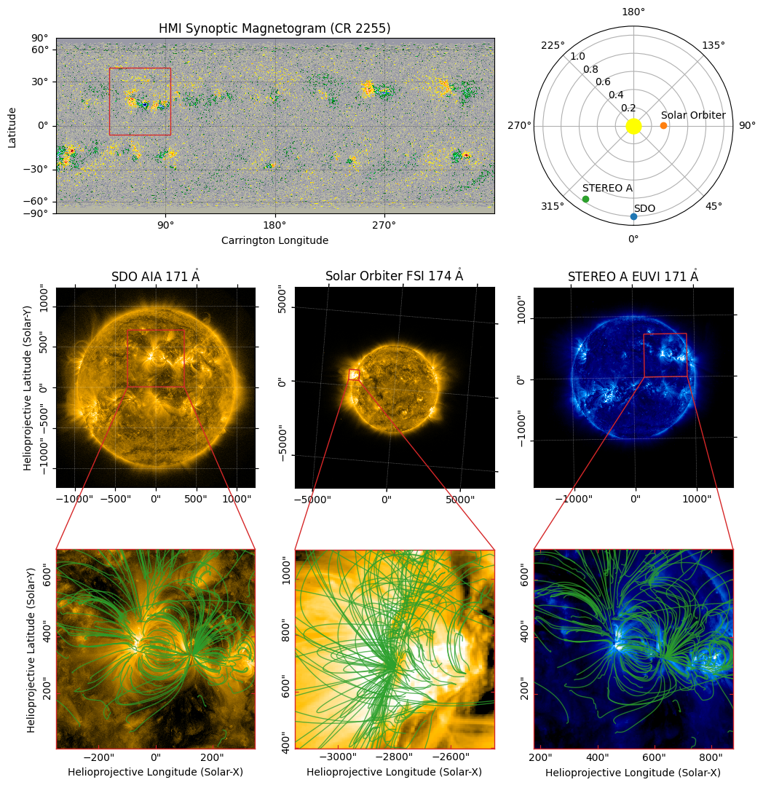
References
Barnes, W. T., Christe, S., Freij, N., et al. 2023, Frontiers in Astronomy and Space Sciences, 10, 1076726, https://arxiv.org/abs/2304.09794
Sun, X. 2018, https://arxiv.org/abs/1801.04265
The SunPy Community, Barnes, W. T., Bobra, M. G., et al. 2020, The Astrophysical Journal, 890 (American Astronomical Society), 68, https://iopscience.iop.org/article/10.3847/1538-4357/ab4f7a
The SunPy Community, Mumford, S. J., Christe, S., et al. 2015, Computational Science and Discovery, 8, 014009, https://arxiv.org/abs/1505.02563